Reply with the codes you approve, e.g. SH-2 LP-1 TH-3
The live carousel is unchanged. Each candidate is shown in the same phone frame the carousel uses. Pick as many as you like per product; to keep a current slide, reply KEEP plus the product (e.g. KEEP-SH).
All screens are real app captures. Labels in the corner mark demo or example data. Concept products (J8NIX, EZRA, Milo, R&K) are not in the carousel and are not on this board yet; R&K is mid-rebrand.
SH✡MER 3 candidates
Live app, read-only captures from the app repo and shomer-app.co.il. 3 of the 7 current slides are SH✡MER.
Current in carousel
Current 1Map with events
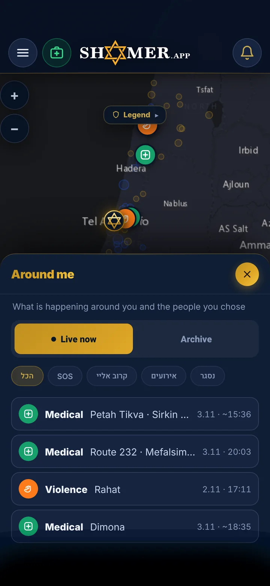
Current 2Around me list
Current 3CPR card
Candidates
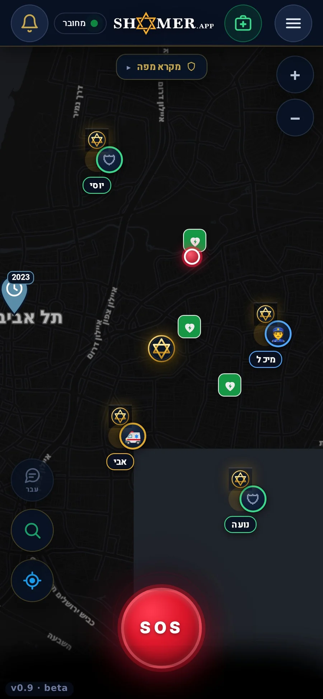
SH-1Sharpest map we have: full-res (1080 px), populated with live event pins, SOS button in frame.
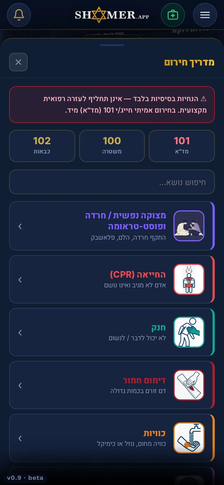
SH-2Emergency guide: clear illustrated cards, the most useful screen to show at a glance.
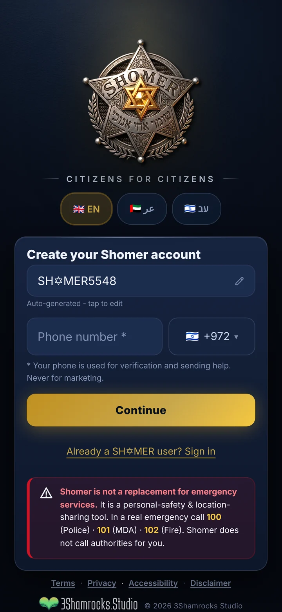
SH-3Fresh capture of the live app entry screen: the badge, three languages, a strong brand moment.Live app, fresh 3x capture
LickPick 5 candidates
Real app screens (Sunday jam sample takes).
Current in carousel
CurrentMarketing card with headline
Candidates
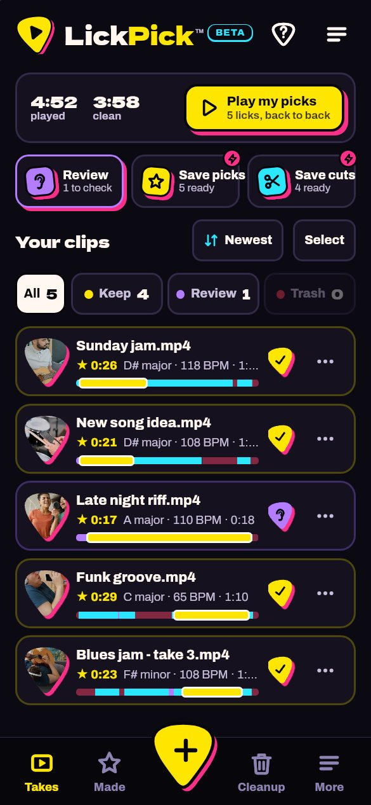
LP-1Home: your takes sorted, big yellow call to action, brand at its clearest.Sample jams
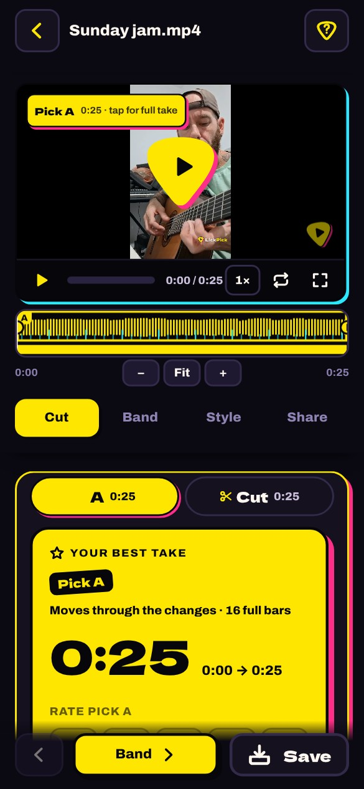
LP-2The hero feature: your best lick found, with the 0:25 pick.Sample jams
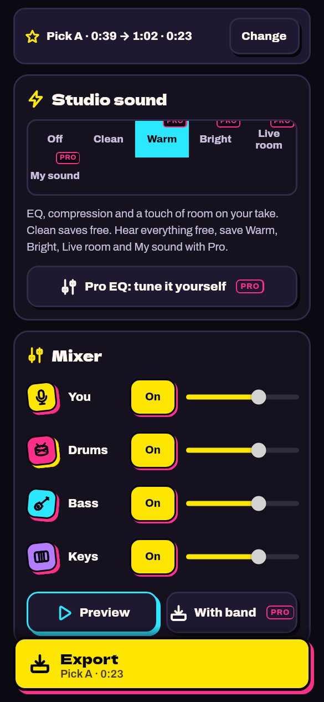
LP-3Play with a band: shows the app doing something no other app does.Sample jams
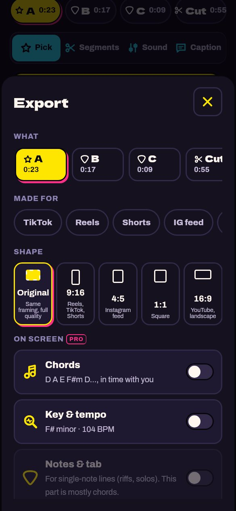
LP-4Export sheet: Reels, Shorts, TikTok formats in one tap.Sample jams
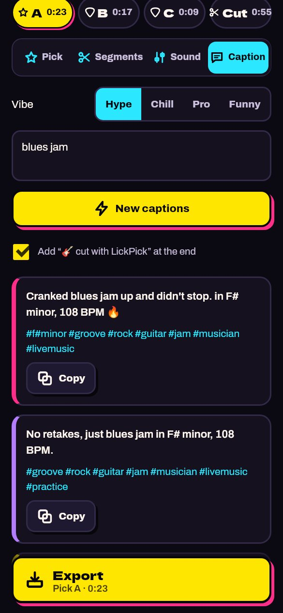
LP-5Captions in four vibes, ready to copy.Sample jams
Chore Royale 4 candidates
Demo mode of the app (the demo family, labelled DEMO in the app).
Current in carousel
CurrentChore board
Candidates
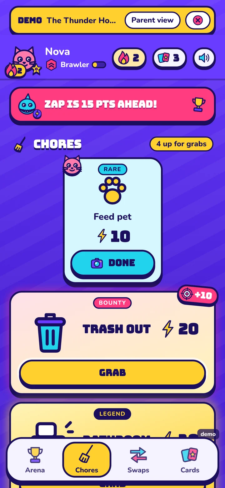
CR-1Fresh 3x capture of the chore board: rare, bounty and legend cards, colourful and populated.Demo family
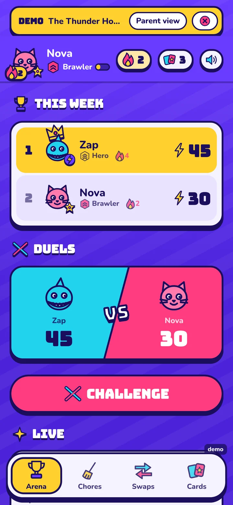
CR-2Fresh capture: weekly leaderboard and a live duel, the competitive hook.Demo family
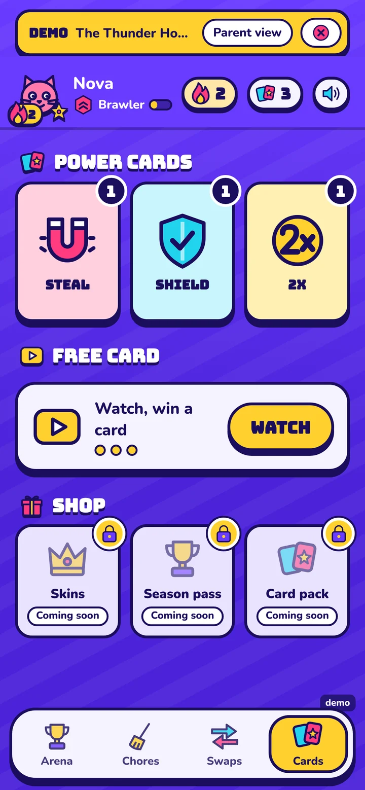
CR-3Fresh capture: power cards and shop, shows the game depth.Demo family
CR-4Existing capture: bounty plus chore cards, zap-ahead banner.Demo family
Trashure-Hunters 13 candidates
Real app screens from the MVP. The MVP needs a family login, so these are existing captures. TH-6 to TH-13 are new: Dave’s own realm map designs and real onboarding screens captured on an Android test phone (April and May 2026). TH-6, TH-7 and TH-8 are now in the homepage carousel.
Current in carousel
CurrentMarketing card, Temple of Light
Candidates
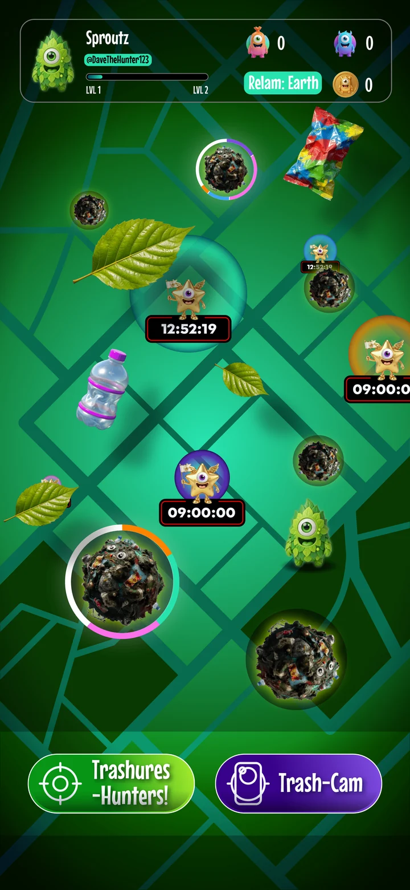
TH-1Hi-res (1548 px) Earth realm map: the core clean-up loop, rich and populated.
TH-2Fire realm map: warm, high-contrast, different from TH-1.
TH-3Water realm map.
TH-4Air realm map.
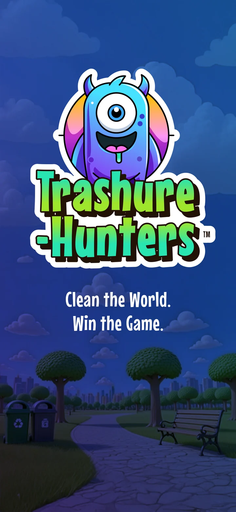
TH-5App splash: logo and tagline, the brand in one frame.
TH-6Dave’s Earth realm map design, full res: Grime Zones, Trashure-Hunt and Trash-Cam buttons. Already cut to the carousel frame.Design screen
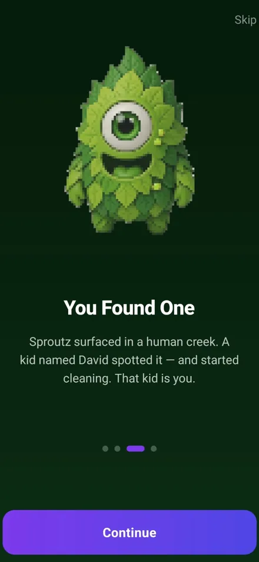
TH-7Onboarding: “You Found One”, Sproutz big and centred. The strongest character moment.Test build